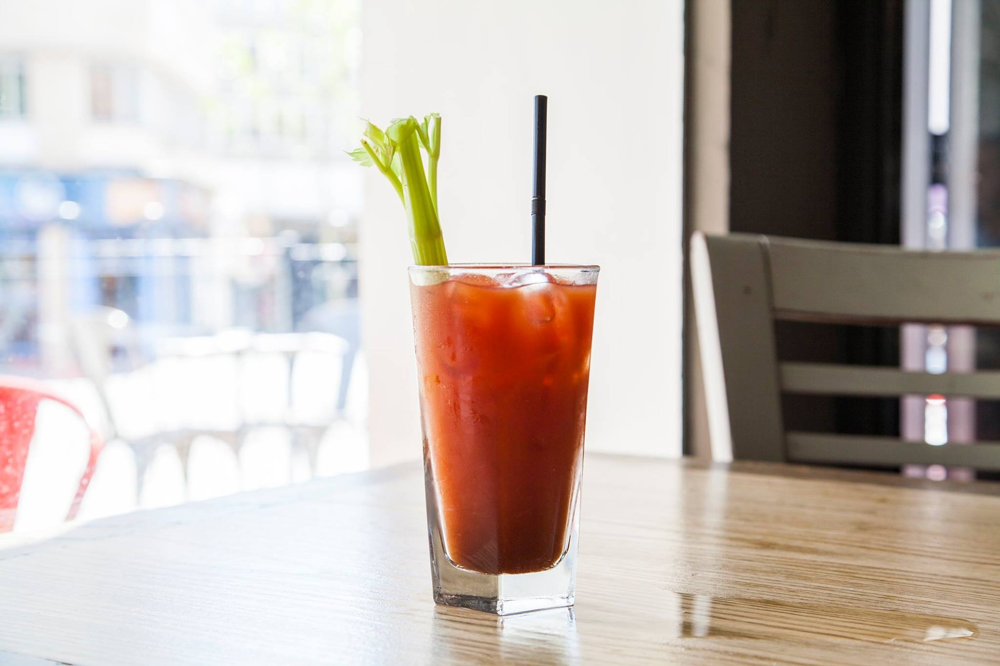

Bloody Mary
블러디 메리
#사막 리조트 #힙합 #매운 #약한 탄산 #적당한 도수

Ingredients
- 보드카 45ml
- 토마토 주스 90ml
- 레몬 즙 15ml
- 우스터소스 2dashes
- 타바스코 소스 2dashes
- 소금 약간
- 후추 약간
- 얼음 100g
- 장식용 셀러리 스틱
- 장식용 레몬 조각
Recipe
- 하이볼 잔에 얼음을 채워줍니다.
- 보드카 45ml를 넣습니다.
- 토마토 주스 90ml를 붓습니다.
- 레몬 즙 15ml, 우스터소스 2dashes, 타바스코 소스 2dashes를 추가합니다.
- 소금과 후추를 약간 넣고, 막대기로 잘 저어줍니다.
TIP! 셀러리 스틱과 레몬 조각으로 가니쉬를 하면 더욱 좋아요!
History
블러디 메리는 파리에 있는 해리스 뉴욕 바(Harry's New York Bar)에서 탄생했다는 이야기도 있지만, 그보다는 캔 토마토주스가 개발된 미국에서 처음 만들었다는 이야기가 더 믿을 만 합니다.
책에서 블러디 메리에 대한 기록이 처음 나타난 것은 1939년 미국으로 거슬러 올라갑니다. 16세기 중반 영국의 여왕 메리 1세는 카톨릭의 부흥을 위해 신교도를 박해하여 '피의 메리'라고 불렸습니다. 토마토 주스가 피색을 연상시켜 이름의 유래가 되었다는 설이 유력합니다.
마시는 사람은 장식된 레몬을 짜서 기호에 맞게 맛을 조절할 수 있습니다. 술을 넣지 않으면 버진(Virgin) 블러디 메리가 되고 베이스를 진으로 하면 블러디 샘(Blood Sam), 데킬라를 베이스로 하면 스트로우 햇(Straw Hat)이 됩니다.